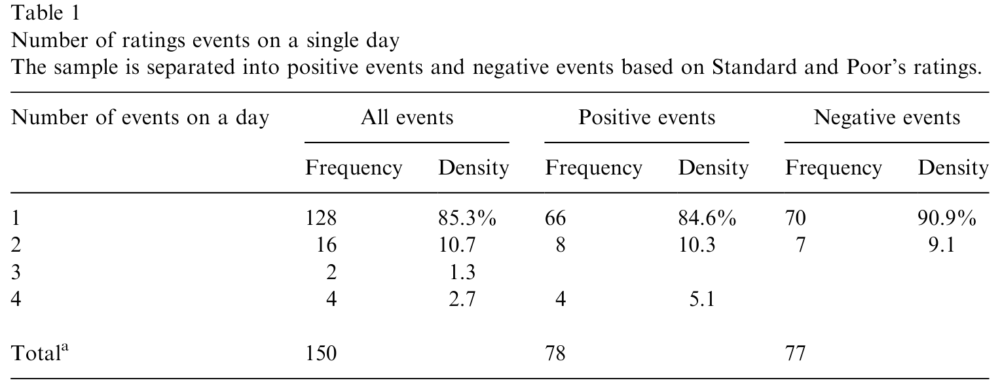
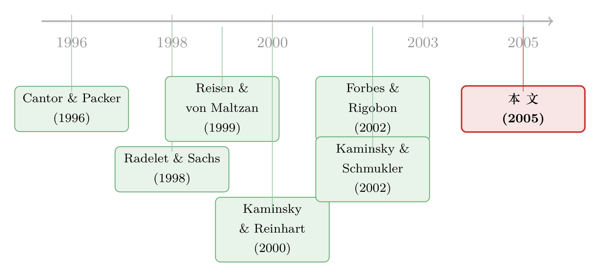

一国降级，何以推高了别国的国债利差？
本文读的是 Gande & Parsley (2005, Journal of Financial Economics)：一国主权评级被下调，会显著抬高其他国家主权债相对美债的利差——平均每下调一档，别国利差上升约 12 个基点。这种溢出是不对称的：负面消息会传染，正面消息几乎无人理睬；它以「共同信息」效应为主，但在与美国资本/贸易流高度负相关的国家身上，能看到方向相反的「差异化」效应。
1 一个被忽略的问题
先讲一个所有做事件研究的人都熟悉、却常常假装看不见的麻烦。
假设你想研究「评级下调对一国国债利差的影响」。最自然的做法是：找到标普下调某国评级的那一天，看这一天前后这个国家的利差跳了多少。Cantor and Packer (1996)、Reisen and von Maltzan (1999) 早年做的就是这件事，估出来的「本国效应」往往不小。
但这里藏着一个让人不安的细节。本文作者翻了翻数据，发现一个惊人的事实：在他们的样本里，超过三分之二的评级事件，发生在彼此 30 天之内——而 30 天恰恰是这类「本国效应」研究最常用的事件窗口长度。换句话说，当你以为自己在干净地测量「阿根廷被降级对阿根廷利差的影响」时，你的事件窗口里很可能正挤着巴西、墨西哥、土耳其的另外好几次评级变动。
于是一个本来被当作「噪声」扫到角落里的东西，忽然变成了主角：别国的评级变动，会不会本身就在影响这个国家的利差？ 如果会，那么所有只看本国效应的研究都被污染了；而更重要的是，这件事本身就值得单独拿出来研究——它讲的是 1990 年代那场深刻的转变：跨国经济联系的主导力量，已经从贸易悄悄换成了资本流动。
这就是 Gande and Parsley (2005) 的起点。他们不去测「本国效应」，而是反过来问：一国主权评级的变化（事件国，event country），会如何传导到所有其他国家（本国，home countries）的主权债利差上？ 这就是所谓的溢出效应 (spillover effect)。
2 为什么偏偏选主权债
为什么不像绝大多数传染 (contagion) 文献那样去看股票市场？
股市数据高频、好用，所以早期关于传染的争论几乎都围着股票收益的相关性打转：危机来时相关性是不是上升了（Forbes and Rigobon, 2002 甚至专门论证，很多所谓「传染」其实只是没校正异方差的统计幻觉）。但作者选了一条更硬的路——主权债，理由有两条，都很扎实：
第一，主权债是一国所有利率的基准。 公司借钱的成本、本地信贷的松紧，都建在主权利率这块地基上。地基一动，影响是全局的。
第二，主权利差直接反映违约风险。 一国美元债相对同期限美债的利差，本身就是市场给这个国家定的「违约保险费」。所以主权债天然就是评级信息传导的主渠道——评级讲的就是违约风险，而利差量的就是违约风险。
（关于「评级到底有没有信息含量、能不能看穿市场噪声」这个更一般的问题，可参见《当价格在说谎：评级机构凭什么「看穿」市场的噪声》。）
3 核心的概念分叉：共同信息 vs. 差异化
这篇文章真正的「脑子」，在于它没有把溢出当成一团模糊的「传染」，而是把它劈成了方向相反的两半。这是全文的核心，值得讲透。
设想 A 国评级被上调了。对 B 国的利差，可能发生两件完全相反的事：
- 共同信息效应 (common information effect)。 A 国变好，可能是因为某个所有新兴市场共享的大趋势（比如全球风险偏好回升）露了头。那么这条好消息也是 B 国的好消息，B 国利差应当下降。这时各国利差同向而动。
- 差异化效应 (differential effect)。 也可能 A 国是以牺牲别人为代价变好的——全球资金从风险权重相近的国家组合里被重新配置，钱涌向了 A 国，从 B 国抽走。那么 A 国的好消息恰恰是 B 国的坏消息，B 国利差应当上升。这时各国利差反向而动。
任何一次评级事件，都可能同时含有这两种成分，观测到的只是二者相减后的净效应 (net impact)。于是作者写下了可检验的假设：
若共同信息效应占主导，则正（负）面事件应当降低（抬高）他国利差；若差异化效应占主导，则符号相反。
这个框架借自 Lang and Stulz (1992) 研究破产公告时的「传染—竞争」二分法，只是搬到了国家层面。它的好处是：它把「溢出到底是怎么回事」变成了一个有符号、可证伪的问题，而不是一句「危机会传染」的口号。
4 数据与一个关键的度量
数据期间是 1991-01-01 到 2000-12-31，逐日。利差来自 Bloomberg，覆盖截至 2001 年 3 月仍有公开交易的美元主权债的全部 34 个国家——从阿根廷、巴西到英国、瑞典，发达与新兴并存。评级数据来自标准普尔 (S&P)。选标普而非穆迪有三个理由：标普动作更勤（样本期内评级变动比穆迪多 36%），其变动更不易被市场提前预判，且约三分之二的情况下标普先于穆迪行动。
这里有一个不该被略过的设计——综合信用评级 (comprehensive credit rating, CCR)。如果只盯着字母评级（D 到 AAA）的实际变动，会漏掉大量信息：标普常常在正式降级前几个月，先把一国列入「负面信用观察」。一个 BBB 国家拿到「正面展望」、几个月后又被「维持原评级」，在作者的框架里其实是两个事件（展望上调 + 评级确认），而只看字母评级会把它们一起抹掉。
所以他们把字母评级编码为 0（最低）到 16（最高），把信用展望编码为 −1（负面）到 +1（正面），二者相加得到 CCR。任何 CCR 的非零变动，就是一个评级事件 (rating event)。
如表 1 所示，样本期内共有 155 个事件。多数日子里评级是逐国单独宣布的，但约 15% 的情形里同一天有多国事件。正面事件（78）与负面事件（77）数量大致相当；只有 5 天同时出现正负事件，对这 5 天取净变动，于是事件数收敛为 150（即 78 + 77 − 5）。

Table 1: contains some data on individual rating change events. There were 155
而前面提到的那个「污染」问题，在这里有了精确的刻画：约 49 个事件（近三分之一）发生在另一次评级公告的 10 个交易日内；整整一半的事件，与上一次事件相隔不超过三周。这个时间上的扎堆 (clustering)，后面会变成一个关键的结果，先按下不表。
5 识别策略
实证设定本身朴素得可敬。把所有国家 j（剔除事件国 i）在每个事件时点 t 的数据并成面板，按正、负事件分成两个子样本，分别估计：
$$ \Delta \text{Spread}_{j,t} = a + b_1\, \text{Event}_{i,t} + \sum_k b_k X_{k,ij,t} + \varepsilon_{j,t}, \quad \forall\, j \neq i. $$
逐项拆开看：
- 被解释变量 \(\Delta \text{Spread}_{j,t}\) 是本国
j的利差变动（百分比利差，即相对同期限美债的利率差占相应美债利率的比例；稳健性里也用基点形式）。注意——它是别人家的利差，不是事件国自己的。 - \(\text{Event}_{i,t}\) 是事件国
i的 CCR 绝对变动幅度。为了便于解读，作者强制让 Event 在正、负两个回归里都取同一符号（用绝对值），把方向交给「正/负子样本」去承载。 - 控制变量 \(X\) 里有债券到期期限，以及成套的年份固定效应和国家固定效应——年份固定效应吸收掉全球性的共同冲击（比如美国货币政策周期），国家固定效应吸收掉各国不随时间变的水平差异。
- 事件窗口取标准的两日窗
[0,1]，用来容纳债券交易地（伦敦或卢森堡）与各国之间的时区差。
面板规模上，150 个事件 × 33 个本国，理论上限是 4,950 个数据点；但并非每国在每个事件都有数据，最终样本是 2,122 个观测（正面事件 1,114，负面事件 1,008）。
这个设计的识别逻辑是清楚的：在控制掉全球年度冲击和国家水平之后，事件国 i 的评级变动若仍能系统性地推动本国 j 的利差，那就是溢出。它与「本国效应」研究最大的区别，正是把因变量换成了「别人家的利差」，从而绕开了那个事件窗口被污染的难题。
6 五个结果，与一次反转
作者报告了五个主要发现，但真正撑起全文的是其中两个，外加一次漂亮的反转。
首先，溢出是真实存在的，而且不对称。 这是全文的脊梁。一国评级变动确实显著影响他国利差；但负面事件才有效，正面事件几乎无人理睬。量级上：在假设可比期限美债收益率为 6% 的前提下，一国主权债每被下调一档，其他国家的主权债利差平均上升约 12 个基点。而上调评级，对他国利差没有可辨识的影响。坏消息会过门，好消息留在原地——这种不对称本身就是一个强结论。
接着，一个自然的问题是：这 12 个基点，到底是「共同信息」还是「差异化」？ 答案是：共同信息占绝对主导。也就是说，绝大多数时候，一国坏消息会让所有国家的利差一起被抬高——大家同向而动，市场把它读成了「这一类国家都更危险了」。
然后，反转出现。 尽管共同信息压倒性地占主导，作者并没有就此收手，而是去找那些「差异化效应」应该最强的角落：与美国资本流或贸易流高度负相关的国家。逻辑是——如果 A 国和 B 国相对美国的资金流向天然此消彼长，那么 A 国变糟、资金避险流出 A 国时，正好可能流向 B 国。结果如预期：在这些国家身上，面对一次降级，利差反而下降。差异化效应在这里浮出了水面。更进一步，证据显示资本流动渠道比贸易渠道更强——钱的通道，比货的通道传得更凶。这一点很重要，它正面回应了引言里那句判断：1990 年代起，金融流动才是跨国相互依赖的主导力量。
第四，那些「看起来很重要」的东西，其实不重要。 共同语言、同属一个贸易集团（Nafta、Mercosur、EU、Asean）、同属普通法系、地理临近（距离或接壤）、法治传统——这些代理文化与制度联系的变量，都没有系统性地影响溢出。换句话说，把各国绑在一起的，是真金白银的资本与贸易联系，而不是「文化亲近」或「区域抱团」。
第五，回到第 4 节按下的那个伏笔——扎堆。 还记得近一半事件相隔不到三周吗？作者发现：近期评级活动越密集，负面溢出越被放大。一次降级，若发生在最近一连串评级变动之后，它的传染力会被显著增强。这正好印证了 Kaminsky and Reinhart (2000) 的论断：一国对危机的易感性是高度非线性的。市场不是孤立地读每一条新闻，而是在「最近发生了什么」的语境里读它。
7 文献脉络
把这篇文章放回它生长的那条线上，会看得更清楚。
最早的一支，是 Cantor and Packer (1996) 与 Reisen and von Maltzan (1999)：他们关心评级变动对本国利差的影响，并发现评级几乎是解释横截面利差的「充分统计量」——一旦把评级放进回归，其他宏观变量就失去了解释力。但这一支对溢出几乎沉默，而且正如前面所说，它的事件窗口可能早被别国事件污染了。
接着，亚洲金融危机点燃了一场争论。Radelet and Sachs (1998) 那篇影响很大的文章直指评级机构：它们不但没预测到亚洲危机，还在危机爆发后追着降级，反而加剧了危机。这把「评级到底传递了什么、又制造了什么」推到了台前。
与此同时，传染的计量方法论自成一脉。Forbes and Rigobon (2002) 厘清了「传染」与「相互依赖」的概念区别，并指出很多危机期相关性上升只是统计假象；Kaminsky and Reinhart (2000) 则强调危机易感性的高度非线性。
最贴近本文的，是 Kaminsky and Schmukler (2002)：他们看 16 个新兴市场，问主权评级变动是否加剧了被评国自己的股债波动，并发现了邻国间的跨国传染。Gande and Parsley (2005) 在此之上往前推了一大步——样本扩到 34 个发达与新兴国家、十年跨危机与非危机，并且第一次把溢出经济地刻画出来：不对称、以共同信息为主、资本流强于贸易流、与文化/制度无关、被近期活动放大。

（这条「信息如何跨境传导」的故事，在股票市场也有一个镜像版本，可参见《美国打个喷嚏，首尔和曼谷为什么只抖三十分钟？》；而把多国国债的「共同涨跌」与「被定价的风险」区分开的努力，则可参见《一起涨跌，不等于一起被定价：国际国债里那条「被付了钱」的暗线》。）
8 评论与延伸（Q&A + 研究方向）
(a) 几个可能的疑问
Q：负面溢出 12 个基点，听上去不大，到底重不重要？
重要在于它是「别人家」的利差，而且是平均到所有其他国家头上的。把它乘上一国全部美元债的存量，再考虑到主权利率是本地一切利率的基准，传导到公司借贷成本上的总量并不小。更关键的是符号和不对称性本身——市场对坏消息系统性地反应、对好消息系统性地无视，这是一个干净的行为事实，量级只是注脚。
Q：作者强制让 Event 取绝对值、把方向交给正/负子样本，这会不会人为制造了不对称？
不会，反而更干净。不对称不是「估计出来一正一负」，而是「负面子样本里 \(b_1\) 显著、正面子样本里 \(b_1\) 不显著」。两个子样本各自独立估计，分开看显著性，所以不对称是数据说的，不是设定逼出来的。
Q：年份固定效应会不会把溢出本身也吸收掉了？
这是个真问题。年份固定效应吸收的是全年层面的共同冲击；而事件研究用的是两日窗
[0,1]内的利差变动，时间分辨率远细于年。所以年度固定效应清掉的是「这一年大家普遍更紧」的水平，留下的是「某国某天的评级事件」带来的高频反应——两者尺度不同，不至于互相吃掉。
Q：「共同信息」会不会其实只是没控制干净的全球因子？
这正是差异化效应那一节的价值所在。如果观测到的只是遗漏的全球因子，那它应当让所有国家同向而动、没有例外。但作者偏偏找到了一组例外——与美国资本/贸易流高度负相关的国家，利差反向变动。一个纯粹的遗漏全球因子无法解释这种系统性的符号反转，所以「共同信息 + 局部差异化」的双成分解释更站得住。
Q：为什么文化、语言、法系这些变量全都不显著？是不是度量太粗？
有度量粗糙的成分（贸易集团、共同语言都是 0/1 哑变量）。但更可能是真实的：在主权债这个由全球资金定价的市场里，把国家绑在一起的是组合再平衡时的资金流向，而不是「说同一种语言」。这与 La Porta et al. (1997, 1998) 那套「法律传统塑造金融」的叙事并不矛盾——后者讲的是制度对本国金融发展的长期影响，而非高频的跨境利差传导。
Q：「近期评级活动放大负面溢出」会不会只是反向因果——危机本身既导致密集降级、又抬高利差？
这是识别上最该担心的一点，作者也承认易感性的非线性与危机相伴（53/155 个事件落在墨西哥、亚洲、俄罗斯、巴西四场危机里）。两日窗 + 控制危机哑变量缓解了一部分，但「密集度」与「危机强度」很难彻底分开。这是我下面想看到更干净识别的地方。
(b) 几个可能的研究问题与提案
1. 把溢出搬到公司债层面。
【经济故事】主权评级是本地一切利率的基准。一国被降级，溢出到他国主权利差之后，是否进一步、且不成比例地传导到他国公司债利差？尤其是那些高度依赖美元融资、或在事件国有大量营收敞口的公司。这把「主权 → 主权」的渠道延长成了「主权 → 他国公司」的二阶传染。 【可行性】中。需要 TRACE/Mergent 之类的公司债成交数据 + 跨国主权评级事件，识别上可沿用本文的两日窗事件研究，按公司的美元负债占比、海外营收敞口做横截面切分。数据可得，难点在跨国公司债流动性参差。
2. 外资持有人结构是不是溢出的「放大器」？
【经济故事】本文证明资本流渠道强于贸易流渠道，但用的是双边资金流的相关性。更直接的问法是：谁持有这些主权/公司债？若两国债券被同一批全球基金共同持有，一国降级触发的赎回与去杠杆，会机械地压低共同持有人手中的他国债券——这是一个比「资金流相关」更微观、更可识别的差异化渠道。 【可行性】高。可用 Morningstar/EPFR 的基金持仓，构造国家对之间的「共同持有人重叠度」，看它是否预测溢出的强度与符号。识别上，共同持有结构在事件前已确定，内生性相对可控。
3. 评级展望 vs. 实际降级：哪种「软信息」传得更远？
【经济故事】本文的 CCR 把字母评级和信用展望揉成一个数。但二者信息含量未必相同——展望是「预警」，降级是「落地」。一个自然的问题是：他国利差对预警和落地的反应是否不同？如果市场已经在展望阶段定价完毕，那么实际降级的溢出应当很小。这能检验市场到底有多前瞻。 【可行性】高。S&P 历史数据本就区分展望与字母评级，把本文的 Event 拆成「展望变动」与「字母变动」两类分别估计即可，几乎是现成数据的重新切分。
4. 流动性，是溢出的另一条暗渠吗？
【经济故事】主权利差既含违约风险，也含流动性风险。一国降级时，他国利差的上升里，有多少是「违约风险被重估」，有多少是「市场整体流动性收紧、买卖价差走阔」？把溢出分解成违约成分与流动性成分，能讲清楚传染到底传的是基本面信息还是市场摩擦。 【可行性】中。需要主权债的买卖价差/换手率等流动性代理，与利差变动一起做分解。新兴市场主权债的高频流动性数据是瓶颈，但对发达国家子样本可行。
9 我的判断
这篇文章的贡献，不在于「发现了溢出」——溢出谁都猜得到——而在于它把一团模糊的「传染」结构化成了一组有符号、可证伪的命题，并逐一给出了证据：溢出是真的、是不对称的（坏消息传、好消息不传）、以共同信息为主但存在局部的差异化、资本渠道强于贸易渠道、与文化制度无关、被近期活动非线性放大。这种「先劈开概念、再用数据贴标签」的做法，是它最值得学的地方。把因变量从「本国利差」换成「他国利差」这一步，更是干净利落地绕开了困扰早期文献的事件窗口污染问题。
担忧主要落在两处。其一，「近期评级活动放大负面溢出」这条非线性结果，与危机本身高度纠缠——密集降级与危机强度难以彻底分离，控制危机哑变量只是缓解。其二，差异化效应虽被识别出来，但它建立在双边资金/贸易流的相关性之上，这是一个相对间接的代理；用真实的共同持有人结构去验证，会比相关性更有说服力。
我接下来最想看到的，是把这套框架接到持有人层面：不是问「两国资金流相不相关」，而是问「两国债券是不是攥在同一批人手里」。当一国降级触发共同持有人的去杠杆，他国债券被机械抛售——那才是 2008 年以后我们反复看到的、真正意义上的跨境传染暗线。从「资金流相关」走到「持仓重叠」，是这条研究线下一个最自然、也最可识别的落点。
参考文献
- Cantor, R., Packer, F. (1996). Determinants and impact of sovereign credit ratings. Federal Reserve Bank of New York Economic Policy Review 2(2), 37–53.
- Forbes, K., Rigobon, R. (2002). No contagion, only interdependence: measuring stock market co-movements. Journal of Finance 57(5), 2223–2261.
- Gande, A., Parsley, D.C. (2005). News spillovers in the sovereign debt market. Journal of Financial Economics 75(3), 691–734.
- Kaminsky, G.L., Reinhart, C.M. (2000). On crises, contagion, and confusion. Journal of International Economics 51(1), 145–168.
- Kaminsky, G.L., Schmukler, S.L. (2002). Emerging market instability: do sovereign ratings affect country risk and stock returns? World Bank Economic Review 16, 171–195.
- Lang, L.H.P., Stulz, R.M. (1992). Contagion and competitive intra-industry effects of bankruptcy announcements. Journal of Financial Economics 32(1), 45–60.
- La Porta, R., Lopez-de-Silanes, F., Shleifer, A., Vishny, R. (1997). Legal determinants of external finance. Journal of Finance 52(3), 1131–1150.
- La Porta, R., Lopez-de-Silanes, F., Shleifer, A., Vishny, R. (1998). Law and finance. Journal of Political Economy 106(6), 1113–1155.
- Radelet, S., Sachs, J. (1998). The East Asian financial crisis: diagnosis, remedies, prospects. Brookings Papers 28(1), 1–90.
- Reisen, H., von Maltzan, J. (1999). Boom and bust and sovereign ratings. International Finance 2(2), 273–293.